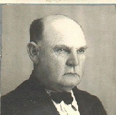

Matías Wagner Fritz
Born: 25 Jul 1882, Hinojo - Buenos Aires - Argentina
Married 13 Nov 1905, Olavarria - Bs.Aires - Argentina, to Ana Hipperdinger
Died: 08 Apr 1951, Hinojo - Buenos Aires - Argentina
Occupation: Hacendado, Agropecuario
Reference: Documentos de la Familia

Foto de la Cédula de Identidad.-
|
Sus padres llegan a Argentina en Diciembre de 1877.-
|